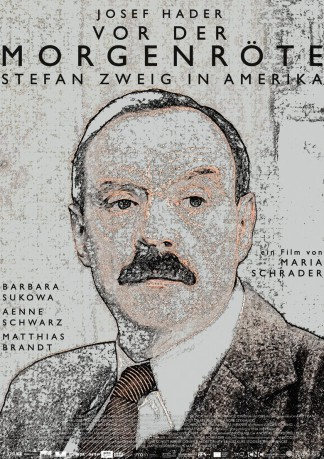

#4975 Vor der Morgenröte
 
 IMDB-Wertung: 7.3 / 10
IMDB-Wertung: 7.3 / 10  Metascore: 0
Metascore: 0 
Vor der Morgenröte erzählt episodisch aus dem Leben des österreichischen Schrift stellers Stefan Zweig, auf dem Höhepunkt seines weltweiten Ruhms, zerrissen von seinem inneren Kampf um die „richtige Haltung" zu den grauenvollen Geschehnissen in Europa. Die Geschichte eines Flüchtlings, die Geschichte vom Verlieren der alten und dem Suchen nach einer neuen Heimat.
Jahr: 2016
Dauer: 106 Minuten
FSK: 0
Land: Österreich Studio: X Verleih AGTonspuren:
Untertitel: Deutsch, Englisch,
Auflösung: 1080p (1920x800) Größe: 5806 MB
Genre: Drama
Regisseur: Maria Schrader
Drehbuch: Morakat Kaewthanek
Soundtrack:
Darsteller:
 Tómas Lemarquis als Lefèvre
Tómas Lemarquis als Lefèvre Barbara Sukowa als Friderike Zweig
Barbara Sukowa als Friderike Zweig Josef Hader als Stefan Zweig
Josef Hader als Stefan Zweig Lenn Kudrjawizki als Samuel Malamud
Lenn Kudrjawizki als Samuel Malamud- Nathalie Lucia Hahnen als Granddaughter
 Ivan Shvedoff als Halpern Leivick
Ivan Shvedoff als Halpern Leivick Harvey Friedman als Friedman
Harvey Friedman als Friedman Manuel Cortez als Maitre
Manuel Cortez als Maitre- Matthew Way als Domingo Melfi
 Matthias Brandt als Ernst Feder
Matthias Brandt als Ernst Feder- Charly Hübner als Emil Ludwig
- Nahuel Pérez Biscayart als Vitor D'Almeida
- Valerie Pachner als Alix Störk
- Nicolau Breyner als Leopold Stern
- André Szymanski als Joseph Brainin
 Cristina do Rego als Alzira Soares
Cristina do Rego als Alzira Soares- Aenne Schwarz als Lotte Zweig
- João Cabral als Herr Mertinez
- Vincent Nemeth als Louis Piérard
- Arthur Igual als Antonio Aita
- Márcia Breia als Gabriela Mistral
- Maria Vieira als Ana de Oliveira
- Oscar Ortega Sánchez als Reporter Sanchez
- Jane Chirwa als Dienstmädchen
- Matamba Joaquim als Mendes
- Naomi Krauss als Erna Feder
- Larissa Offner als Jandira Vargas
- Patrice-Luc Doumeyrou als De Figuereido
- Daniel Sasportes als Driver
- Robert Finster als Karl Hoeller
- Nicolas Buitrago als Giuseppe Ungaretti
- Suely Torres als Senhora de Souza
- Lilian Viegas als Dienstmädchen
- Daniel Puente Encina als Sadler
- Yara Dib als Guest
- Yvy Coe als Singing Man
Datei: X:\2016(N-Z)\Vor der Morgenröte (2016, FSK0, 1920x800).mkv seit 06.12.2016
Festplatte: HD 2016(A-Z)
 Es gibt insgesamt 182 Filme in der Gruppe '2016(N-Z)'
Es gibt insgesamt 182 Filme in der Gruppe '2016(N-Z)'